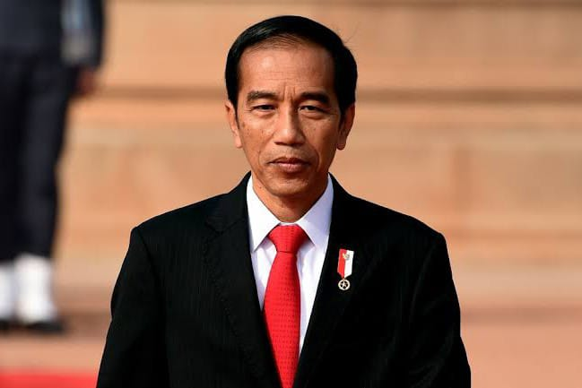

Joko Widodo (Indonesian: [dʒɔkɔ widɔdɔ]; born Mulyono; 21 June 1961), popularly known as Jokowi, is an Indonesian politician and businessman who has been the seventh president of Indonesia since 2014. Previously a member of the Indonesian Democratic Party of Struggle (PDI-P), he was the country's first president to not emerge from the country's political or military elite. He previously served as governor of Jakarta from 2012 to 2014 and mayor of Surakarta from 2005 to 2012. He is due to step down on 20 October 2024, to be replaced by Prabowo Subianto.
Jokowi was born and raised in a riverside slum in Surakarta. He graduated from Gadjah Mada University in 1985, and married his wife, Iriana, a year later.[2][3] He worked as a carpenter and a furniture exporter before being elected mayor of Surakarta in 2005.[4][5] He achieved national prominence as mayor and was elected governor of Jakarta in 2012,[6] with Basuki Tjahaja Purnama as vice governor.[7][8] As governor, he reinvigorated local politics, introduced publicised blusukan visits (unannounced spot checks)[9] and improved the city's bureaucracy, reducing corruption in the process. He also introduced a universal healthcare program, dredged the city's main river to reduce flooding, and inaugurated the construction of the city's subway system.[10]